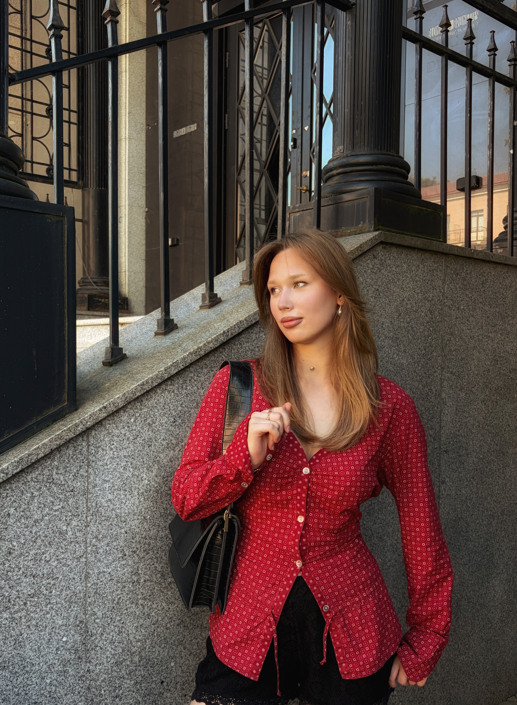

Создаю визуальный стиль для брендов и проектов
Разрабатываю логотипы и айдентику, работаю с полиграфией и ИИ-инструментами, помогая проектам обрести собственный стиль
Визуальная система
Собираю логотипы, знаки, фирменные цвета, типографику и правила применения на носителях.
Печать и форма
Верстаю календари, обложки, плакаты, приглашения и упаковку с опорой на ритм и композицию.
ИИ и интерактив
Генерирую визуальные образы и собираю интерактивные веб-сцены с помощью нейросетей.
Проекты
Обо мне

images/portrait.webp
Пропорция 4 на 5. Помести файл в папку images рядом с index.html.
ИСЗ им. А. М. Широкова
Графический дизайн, 3-й курс
• Фриланс — айдентика, логотипы и печатная продукция
• Провела мини-курс по композиции и типографике для медиа-команды
• Организовала квест на 60+ участников и участвовала в командной предвыборной кампании
• Сертификаты по рисунку, живописи, композиции и анатомии · Английский B1
Я Катерина Семейникова, учусь на графическом дизайне в ИСЗ им. А. М. Широкова. Делаю айдентику, логотипы, полиграфию и графику для цифровых проектов, опираясь на сетку, типографику и ясную визуальную логику.
Сочетаю классическую базу композиции и рисунка с современными ИИ-инструментами — от аккуратной подготовки печатных макетов до интерактивных веб-проектов.
Инструменты
Навыки
- — Типографика и верстка
- — Работа с сетками
- — Колористика и композиция
- — Айдентика и фирменный стиль
- — Сторителлинг, режиссура и раскадровки
- — Грамотная работа с ИИ
Качества
- + Самостоятельность и насмотренность
- + Коммуникабельность и адаптивность
- + Лидерство и ответственность
- + Работа в команде и соблюдение сроков
- + Поиск нестандартных решений